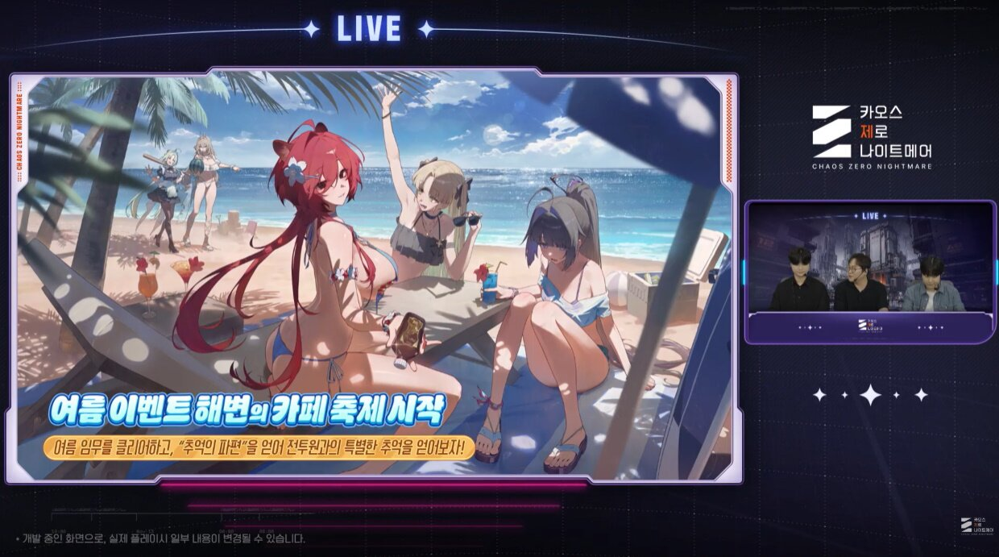

카오스 제로 나이트메어 카제나 코믹월드335 오프라인 부스 참가, 시즌4 여름 이벤트 총정리
시즌4 '부서진 빛과 발톱'이 7월 29일에 적용된 지도 벌써 엿새나 지났는데요, 저도 힐데 육성하느라 정신없이 돌리던 중에 반가운 소식이 하나 더 떴습니다. 카오스 제로 나이트메어가 이번엔 화면 밖으로 나와서 오프라인에서 유저들을 직접 만난다고 하네요.
1. 코믹월드335 오프라인 부스, 8월 15일ㆍ16일 참가 확정
카오스 제로 나이트메어는 8월 15일(토)ㆍ16일(일) 일산 킨텍스 제1전시장에서 열리는 코믹월드335에 부스로 참가합니다.
오늘이 8월 4일이니까 이제 열하루 남았는데요, 부스는 시즌4에 등장하는 전투원들이 평소와는 다른 방식으로 여름을 보내는 듯한 테마로 꾸며진다고 하네요. 현장에는 시즌3ㆍ시즌4 캐릭터로 분한 코스어분들이 나와서 유저들을 맞이할 예정이고, 무료 음료와 현장 한정 굿즈를 포함한 이런저런 이벤트도 마련된다고 밝혔습니다.
다만 몇 시에 뭘 하는지 세부 프로그램 시간표나 정확한 굿즈 품목까지는 이 글을 쓰는 8월 4일 기준으로는 따로 나온 게 없더라고요. 인벤 기사 원문도 몇 번 다시 읽어봤는데 아마 별도 공지로 풀릴 것 같습니다. 나오면 공식 채널 기준으로 짧게 업데이트할게요.
사실 카제나가 오프라인 행사에 나선 게 이번이 처음은 아니더라고요. 작년인 2024년 12월 7일ㆍ8일에도 일산 킨텍스 제1전시장 2Hall에서 열린 AGF 코리아 2024에 부스로 참가해서 코스플레이 캐릭터를 공개한 이력이 있습니다. 그때는 같은 킨텍스라도 2Hall 하나만 썼는데, 이번 코믹월드335는 제1전시장 전체를 쓰는 행사다 보니 규모가 확 다르지 않을까 싶네요.
코믹월드335 부스 참가 소식 관련 이미지예요.
코스어 프로그램이나 세부 이벤트가 정확히 몇 시부터 몇 시까지인지는 나와봐야 알 것 같은데, 그래도 부스 컨셉이 '여름 휴가'라 사진 찍을 거리는 꽤 나올 것 같더라고요.
2. 코믹월드335는 어떤 행사길래 - 예약제ㆍ운영시간부터 체크
코믹월드335는 2026년 8월 15일ㆍ16일 이틀간 일산 킨텍스 제1전시장에서 열리는 100% 사전예약제 행사입니다.
현장 방문 계획이 있으면 예약 여부부터 챙겨야겠죠? 운영시간은 아래 표로 정리했습니다. 카제나 부스도 이 시간대 안에서 운영된다고 보시면 됩니다. 회차별 인원 제한이나 예약 방법 같은 세부 절차는 코믹월드 공식 사이트에서 직접 확인하시는 게 가장 정확합니다.
| 구분 | 시간 |
|---|---|
| 동아리 입장 | 09:30 |
| 얼리입장권 입장 | 10:30 |
| 일반 입장ㆍ행사 시작 | 11:00 |
| 행사 종료 | 17:30 |
3. 시즌4 '부서진 빛과 발톱', 이미 적용된 상태 - 못 보신 분은 여기부터
시즌4 '부서진 빛과 발톱'은 지난 7월 29일에 이미 정식 적용됐습니다.
은하계 재해를 다루는 스토리에 힐데ㆍ아라벨라ㆍ올가 신규 전투원, 욕망 카드 시스템, 하이데마리ㆍ세레니엘 외출복까지 한 번에 풀렸는데요, 자세한 내용은 예고 때 따로 정리해 둔 글이 있으니 참고하시면 됩니다. (▶ 같이 보면 좋은 글에 링크해 뒀어요)
4. 시즌4 여름 시즌 인게임 이벤트, 뭐가 오나
시즌4 후반부에는 9주간 진행되는 해변 카페 축제 테마 이벤트를 비롯해 스텔라 마켓ㆍ시 브리즈 등 여름 한정 콘텐츠가 순차로 열립니다.
- 해변 카페 축제(9주간) - 3주 간격으로 콘텐츠 미션이 추가되고, 이걸 플레이해서 보상을 챙기는 방식입니다. 여기에 해변 카페 축제 전용 스토리를 감상하고 앨범을 완성하는 서브 이벤트도 같이 진행됩니다.
- 스텔라 마켓(8월 19일 시작, 3주간) - 매일 갱신되는 뉴스를 보고 다음날 시장 상황을 예측해서 투자하는 방식인데요, 뉴스에 거짓 정보가 섞여 있어서 이걸 가려내는 게 핵심입니다.
- 시 브리즈(시즌4 후반) - 매일 캐릭터에게 칵테일을 대접하고 이야기를 듣는 형식으로, 기본 엔딩 외에 히든 엔딩도 준비돼 있습니다.
이름만 보면 여유로운 힐링 이벤트 같은데, 스텔라 마켓은 정보 판별형 미니게임이라 의외로 머리 좀 써야 할 것 같더라고요. 9주면 거의 두 달 가까이 이어지는 셈이라, 여름 시즌 내내 챙길 콘텐츠가 끊이지 않겠네요. 시 브리즈는 히든 엔딩까지 있다고 하니 매일 들르는 재미가 쏠쏠할 것 같습니다.

해변 카페 축제 시작을 알리는 인게임 예고 화면이에요. 여름 컨셉 전투원들과 스트리머들이 라이브 방송 화면처럼 연출돼 있습니다.
이미지 출처: 인벤 웹진 (ⓒ슈퍼크리에이티브ㆍ스마일게이트 메가포트)
5. 레이ㆍ신규 전투원 외출복도 이번 여름에 나온다
레이의 신규 외출복 '신나는 여름 방학'은 8월 19일부터 무료로 배포됩니다.
같은 날 시작하는 스텔라 마켓과 날짜가 겹치니, 8월 19일엔 챙길 게 한 번에 몰리는 셈이네요. 여기에 신규 캐릭터 힐데ㆍ아라벨라ㆍ올가의 수영복 테마 외출복도 각 캐릭터 픽업 일정에 맞춰 순차로 판매됩니다. 정확한 개별 판매일까지는 나와봐야 알 것 같고요. 레이 외출복은 무료 배포라 부담 없이 챙기기 좋고, 나머지 세 명은 유료 구매다 보니 지갑 사정 봐가면서 픽업 타이밍을 맞추셔야겠어요.
| 콘텐츠 | 시작(예정) | 형태 |
|---|---|---|
| 해변 카페 축제 | 진행 중(9주) | 무료 |
| 스텔라 마켓 | 8월 19일(3주간) | 무료 |
| 시 브리즈 | 시즌4 후반 | 무료 |
| 레이 외출복 '신나는 여름 방학' | 8월 19일 | 무료 배포 |
| 힐데ㆍ아라벨라ㆍ올가 수영복 외출복 | 픽업 순차 | 구매(유료) |
8월 19일 무료 배포되는 레이 외출복이에요.
자주 묻는 질문
Q. 코믹월드335 카제나 부스는 예약 없이 가도 되나요?
코믹월드335 자체가 100% 사전예약제 행사라서, 부스 방문도 행사 예약을 먼저 마쳐야 합니다. 부스 전용 별도 예약이 따로 있는지는 이 글 기준으로 확인되지 않았고, 일반 입장은 11시부터입니다.
Q. 힐데ㆍ아라벨라ㆍ올가 수영복 외출복은 언제 다 풀리나요?
정확한 개별 날짜까지는 이번 발표에 포함되지 않았습니다. 각 캐릭터 픽업 일정에 맞춰 순차로 판매된다고만 알려져 있어요.
Q. 레이 외출복 '신나는 여름 방학'은 계속 무료로 받을 수 있나요?
정확한 종료 시점은 이 글을 쓰는 시점엔 알려진 게 없습니다. 8월 19일부터 배포가 시작된다는 소식만 확인된 상태라, 늦지 않게 챙기시는 걸 추천드립니다.
이번 여름은 카제나가 게임 안팎으로 다 바쁠 것 같습니다. 오프라인은 8월 15일ㆍ16일 코믹월드335, 게임 안에서는 해변 카페 축제부터 스텔라 마켓ㆍ시 브리즈까지 이어지니까 일정 겹치는 거 없나 한 번씩 체크해 두시면 좋겠어요. 저도 부스 다녀오면 사진이랑 같이 후기로 찾아뵐게요.
▶ 같이 보면 좋은 글
· 카오스 제로 나이트메어 시즌4 '부서진 빛과 발톱' 예고, 힐데ㆍ아라벨라ㆍ올가 신규 전투원과 외출복까지 (링크는 네이버에서 직접 연결)
· 카오스 제로 나이트메어 테네브리아 공략 (링크는 네이버에서 직접 연결)
· 카오스 제로 나이트메어 디아나 세팅 공략 (링크는 네이버에서 직접 연결)
참고한 곳
· 코믹월드 공식 사이트 - 335회 안내
· 인벤 웹진 - 카오스 제로 나이트메어 코믹월드335 참가ㆍ여름 이벤트 보도
· 공식 X(@CZN_Official_KR) - AGF 코리아 2024 참가 소식